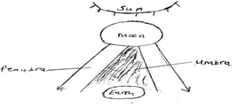
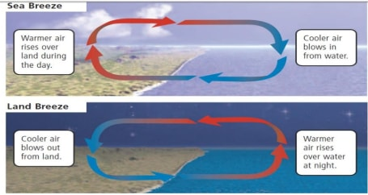

c)
List down three types of boundaries associated with plate tectonic
movements (3mks)
SECTION
A
- a)
Define the term solar system (1mk)
sun
and the nine planets orbiting around it
b)
List down two theories that explain the origin of the solar system
(2mks)
- passing
star theory
- Nebula
cloud theory
- a)
Give a brief explanation about the origin of the earth (4mks)
- 3rd
planet on the solar system
- formed
about 4600 million years ago
- a
hot mass of gas was thrown off the sun
- these
gases cool to form liquid
- Heavier
material collected at the centre to form the core
- Less
heavier formed mantle and crust
- As
cooling continued the outer part of the earth hardened faster to
form crust.
b)
Fill in the blank spaces on the dimension of the earth (4mks)
Equatorial diameter 12762
km
polar diameter 12722km
equatorial circumference 40085
km
polar circumference 39955
km
c)
List down four proofs that the earth is spherical (4mks)
- circumnavigation
- Approaching
ship
- earth
rotates from west to East
- Eclipse
of the moon
- Earth
curved horizon
- All
other planets are round
- Aerial
photographs
- a)
List down four effects of rotation of the Earth (4mks)
- Day
and night
- Drifference
of 1 hour between meridians 15° apart.
- Deflection
of winds and ocean currents
- variation
in speed of air masses
- rising
and falling of ocean tides
b)with
the aid of a well labelled diagram, explain how solar eclipse occurs
(4mks)

- a)
Define the term weather (1mk)
condition
of the atmosphere of a given place at a specific time over a short
period of time e.g a day, month or a year.
b)
List down four factors that determine the amount of solar radiation
which reaches the earth surface. (4mks)
- intensity
of suns radiation in space
- Transparency
of the atmosphere i.e transmission absorption, scattering and
reflection
- Position
of the earth on its orbit
- The
angle of inclination or surface on which the sun’s rays fall
- Area
and nature of the surface on which rays fall
- a)
Explain the term humidity (1mk)
Condition
of the atmosphere with reference to its water vapour content
b)Differentiate
between absolute humidity and relative humidity (2mks)
Absolute
– amount of water vapour in a given volume of air at a
particular temperature expressed in gm/m3
Relative
– Ratio between absolute humidity of a given mass of air and
the maximum amount of H2O
vapour that it can hold at the same temperature.
- a)
What is the meaning of the term winds? (1mks)
Moving
air over the earth’s surface
b)
With Aid of well labelled diagrams explain how land and sea breezes
occur (6mks)

- a)
Name the four main zones of the atmosphere (4mks)
- Troposphere
- Stratosphere
- Mesosphere
- Thermosphere/ionosphere
b)
Differentiate between negative, positive and zero lapse rate. (3mks)
Negative
– Temp increase with increase in altitude
Zero-
no charge in temp with increase in altitude
Normal
lapse rate – decrease in temperature with increase in height
c)
What is the ozone layer? (2mks)
Layer
that absorbs ultra- violet rays from the sunprotective layer
d)
What is its importance to man? (2mks)
-
Protective layer, shields man from ultra-violet rays which may cause
skin cancer and other forms of ailments.
- The
table below shows rain fall and temperature in town x use it to
answer the questions that follow
-
Months
|
j
|
F
|
M
|
A
|
M
|
J
|
J
|
A
|
S
|
O
|
N
|
D
|
Temp °C
|
23
|
24
|
26
|
28
|
29
|
28
|
26
|
26
|
26
|
30
|
28
|
25
|
Rainfall mm
|
3
|
0
|
3
|
1
|
18
|
500
|
720
|
408
|
300
|
70
|
15
|
0
|
- Calculate
- The
total annual rainfall (2mks)
2038
- The
mean monthly rainfall (2mks)
169.83
- The
annual range of temperature (2mks)
drifference
between highest and lowest mean niontaly temperature in year 30-23 =
7°C
- The
mean annual temperature (2mks)
Mean
annual temp = sum
mean monthly temperature
319
12 12
26.58°C
- Using
the table indicate the following
- The
wettest month (1mks)
July
- The
hottest month (1mk)
October
- The
coolest month (1mk)
January
SECTION
B
- a)
Define the term Earth movements (1mk)
Movement
of crustal rocks by forces originating and operating in the interior
of the earth known as tectonic forces
b)
Formation of internal
or External land formas by tectonic forces is determined by the
following (3mks)
- Nature
and age of the earth’s materials e.g degree of elasticity
- Type
of movement involved
- Intensity
and scale of the forces involved.
c)
List down two types of eath movements (2mks)
-
Horizontal/orogenic/lateral
-
vertical /Epeirogenic
- a)
Give two causes of earth movements (2mks)
- Magma
movement
- Gravitational
force
- convectional
currents
- isostatic
adjustment
b)
List down thre evidences supporting continental drift theory (3mks)
- Climatolog
- sea
floor spreading
- jig
saw fit of continental margin
- geological
structure
- paleomagnetic
studies
- ancient
glacial deposits
- mid-Atlantic
ridge
c)
List down three types of boundaries associated with plate tectonic
movements 93mks)
- Extension/constructive
margins
- Compressional
/destructive margin
- transform
faults /conservative margins
- a)
Define the term folding (1mk)
bending/
crumbling of rocks on the earth’s crust.
b)
Briefly explain the process of folding (3mks)
- compression
of rocks – anticlines and synclines formed
- geosynclines
filled with rediments –pressure created due to additional
weight
- Compression
in the earth’s crust- sediments wrinkle forming foreland and
back land
c)
List down three different types of folds 93msk)
- simple
symmetrical
- asymmetrical
- over
fold
- isoclinals
fold
- recumbent
fold
- napple/over
thrust
- Aticlinorium
synclinorium complex
d)
List down three features resulting from folding (3mks)
- fold
mountains
- Escarpments
- synclinal
valley
- depressions
c)
Fill in the gaps below (5mks)
Fold
mountain where found
- Atlas
N.W Africa
- Alps
Europe
- Himalagas
Asia
- Andes
S. America
- Rockies
North America
f)
Give three significances of folding to human activities (3mks)
- a)
Define the term faulting (1mks)
Its
cracking or fracturing of rocks of the earth’s crust
b)
List down three types of faults (3mks)
- Normal
fault
- Reversed
fault
- tear,
shear slip fault
- Thrust
fault
- An
anti-clinal fault
c)
i)What is a rift valley? (1mk)
Long
narrow trough between
two or more parallel faults with steep faults scarps on either side.
ii)
Mention three ways in which the rift valley may have been formed
(3mks)
- Tension
- compression
- Anticlinal
arching
- a)
Explain the meaning of the following terms;
- A
picture (1mk)
An
image of an actual object represented either as drawing, painting or
photograph
- A
map (1mk)
Representation
of part or whole earth on a flat surface e.g. sheet of paper and
drawn to scale
- A
plan (1mk)
map
of a place or a picture drawn to scale for a specific use.
- Give
three uses of maps (3mks)
- giving
direction and location of place
- showing
human and economic activities
- indicate
physical features
- showing
weather trends
- showing
political and administrative boundaries
- for
military strategy